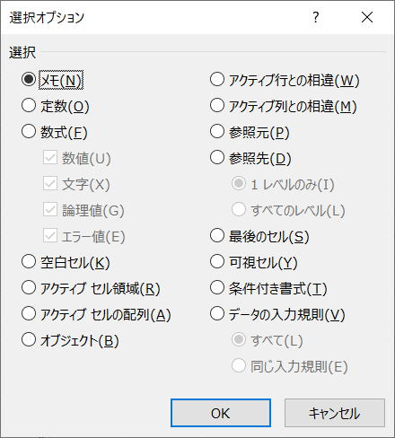

ジャンプ・セル選択の応用（空欄を埋める、1行置きに挿入）

ジャンプ機能は、指定のセルにジャンプする機能です。
このジャンプ先の指定方法が豊富に用意されていて、その応用範囲はとても広いです。
・表の同上で空欄になっているセルを埋める
・表に1行おきにきに空白行を挿入する
動画と簡単な解説で紹介します。
仕様歳については以下を参照してください。
表の同上で空欄になっているセルを埋める
・Ctrl + A ・・・ 空欄を埋める範囲を選択
・Ctrl + G (またはF5) ・・・ ジャンプ
・セル選択
・空白セル
・OK
・=↑ ・・・ =キーに続けて↑キー
・Ctrl + Enter ・・・ 選択セルに一括入力
表に1行おきにきに空白行を挿入する
・E3:F4を選択
・フィルハンドルをダブルクリック
・Ctrl + G (またはF5) ・・・ ジャンプ
・セル選択
・定数
・OK
・Ctrl + Shift + ;(+) ・・・ 挿入
・行全体
・OK
右端に連番（例えば1～10）をいれて、その連番を最下行の下に貼り付けます。
1～10,1～10と縦に並ぶ事になります。
上の動画であれば、E3から縦に1,2,3,・・・その下に続けて1,2,3,・・・
この連番をキーとして表を並べ替えれば1行置きに空行が挿入されます。
ただし、この場合は行挿入していないので書式なしの行が間に入ることになります。
同じテーマ「エクセル関数応用」の記事
VLOOKUP 左側の列を取得(MATCH,INDEX,OFFSET)
新着記事NEW ・・・新着記事一覧を見る
VBA100本ノック 100本目：WEBから100本ノックのリストを取得｜VBA練習問題（3月3日）
VBA100本ノック 99本目：自動席替え（行列と前後左右が全て違うように）｜VBA練習問題（3月2日）
VBA100本ノック 98本目：席替えルールが守られているか確認｜VBA練習問題（3月1日）
VBA100本ノック 97本目：Accessデータを取得（グループ集計）｜VBA練習問題（2月27日）
VBA100本ノック 96本目：Accessデータを取得（マスタ結合&抽出）｜VBA練習問題（2月26日）
VBA100本ノック 95本目：図形のテキストを検索するフォーム作成｜VBA練習問題（2月24日）
VBA100本ノック 94本目：表範囲からHTMLのtableタグを作成｜VBA練習問題（2月23日）
VBA100本ノック 93本目：複数ブックを連結して再分割｜VBA練習問題（2月22日）
VBA100本ノック 92本目：セルの色を16進で返す関数｜VBA練習問題（2月20日）
VBA100本ノック 91本目：時間計算（残業時間の月間合計）｜VBA練習問題（2月19日）
アクセスランキング ・・・ ランキング一覧を見る
1.最終行の取得（End,Rows.Count）｜VBA入門
2.RangeとCellsの使い方｜VBA入門
3.変数宣言のDimとデータ型｜VBA入門
4.マクロって何？VBAって何？｜VBA入門
5.Range以外の指定方法（Cells,Rows,Columns）｜VBA入門
6.セルのコピー&値の貼り付け（PasteSpecial）｜VBA入門
7.繰り返し処理（For Next)｜VBA入門
8.セルに文字を入れるとは（Range,Value）｜VBA入門
9.マクロはどこに書くの（VBEの起動）｜VBA入門
10.とにかく書いてみよう（Sub,End Sub）｜VBA入門
このサイトがお役に立ちましたら「シェア」「Bookmark」をお願いいたします。
記述には細心の注意をしたつもりですが、
間違いやご指摘がありましたら、「お問い合わせ」からお知らせいただけると幸いです。
掲載のVBAコードは動作を保証するものではなく、あくまでVBA学習のサンプルとして掲載しています。
掲載のVBAコードは自己責任でご使用ください。万一データ破損等の損害が発生しても責任は負いません。